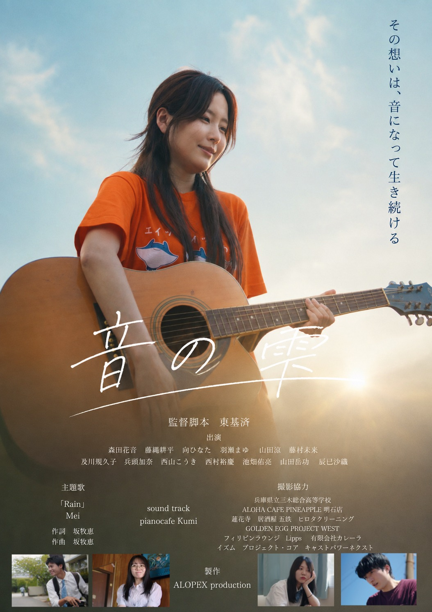
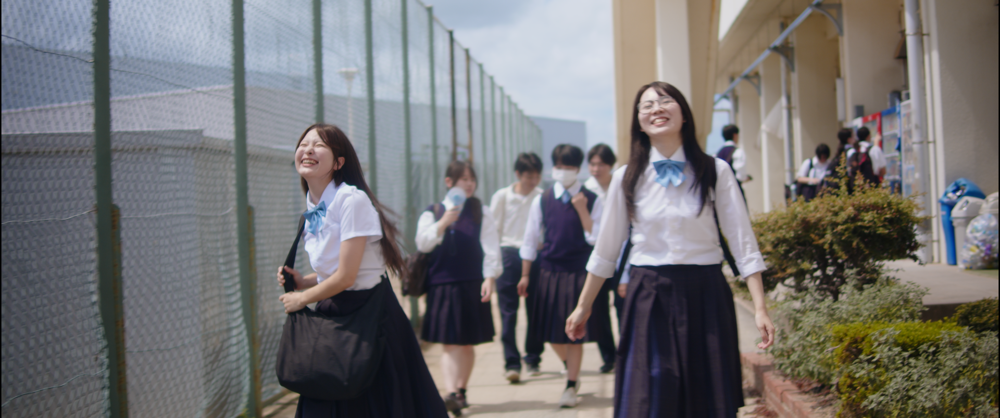

監督・出演者 登壇予定
上映当日は、監督・出演者による登壇を予定しています。
登壇者や実施内容の詳細は、決まり次第お知らせします。
A FILM BY MOTOZUMI AZUMA
映画『音の雫』上映会
スクリーンで出会う、ひとときを。
会場 詳細近日公開
予約受付準備中 ↓自由席 / 当日現金払い / 全3回を予定


ABOUT THE FILM
監督・脚本：東基済
製作：ALOPEX production
THE SCREENING
映画『音の雫』の上映会を準備しています。
会場・上映時刻・料金などの詳細は近日公開。
SPECIAL EVENT
上映当日は、監督・出演者による登壇を予定しています。
登壇者や実施内容の詳細は、決まり次第お知らせします。
当日は『音の雫』の上映会限定物販も予定しています。
販売商品などの詳細は、決まり次第お知らせします。
RESERVATION
予約受付は準備中です。
受付開始後、Googleフォームからお申し込みいただけます。
本フォームは予約のお申し込みです。送信時点では予約確定となりません。運営側で空席状況を確認後、予約確定のご連絡をいたします。
予約受付準備中・現在お申し込みいただけません。
自由席 / 当日現金払い。会場・上映時刻・料金は詳細近日公開。
問い合わせ先：azumamotozumi0303@gmail.com